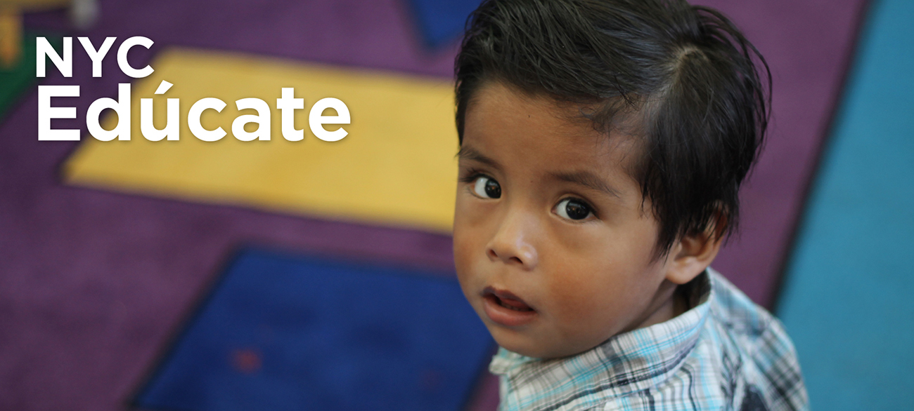
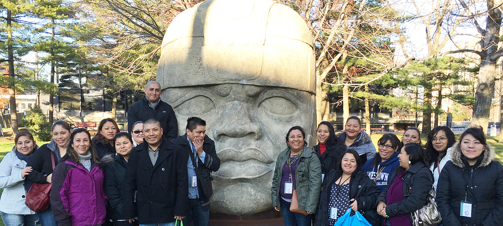

Casa
Curso Académico
0 a 3 Años de Edad
4 Años de Edad
5 Años de Edad
6 a 8 Años de Edad
9 y 10 Años de Edad
11 a 13 Años de Edad
14 a 18 Años de Edad
Educación para Adultos
Universidad
Posgrado
Acerca De
Recursos
Glosario
Recursos
Temas
Contáctanos
0 a 3 Años de Edad
Bebes y Niños Pequeños
Las investigaciones demuestran que leer en voz alta a los niños pequeños promueve el desarrollo del lenguaje y otras habilidades...
4 Años de Edad
Pre-kínder: niños nacidos en el año 2011
Recomendación clave: Los niños que asisten a un pre-kínder de alta calidad...
5 Años de Edad
Kínder: niños que cumplen cinco años en 2015
Recomendación clave: Recuerde que para escoger un programa de kínder...
6 a 8 Años de Edad
Primer, segundo y tercer grado
Recomendación clave: Los años iniciales de la escuela primaria son un buen momento para considerar...
9 y 10 Años de Edad
Cuarto y quinto grado
Recomendación clave: Cuarto grado es el momento para que los padres y los estudiantes comiencen...
11 a 13 Años de Edad
Sexto, séptimo y octavo grado
Recomendación clave: Entre sexto y séptimo grado, los padres y los estudiantes deben comenzar a prepararse...
14 a 18 Años de Edad
De noveno a grado doce
Recomendación clave: Los estudiantes y sus familias deben programar una reunión “de equipo” con un consejero escolar...

Educación para Adultos
De noveno a grado doce
Recomendación clave: Los estudiantes y sus familias deben programar una reunión “de equipo” con un consejero escolar...
Universidad
De noveno a grado doce
Recomendación clave: Los estudiantes y sus familias deben programar una reunión “de equipo” con un consejero escolar...
Posgrado
De noveno a grado doce
Recomendación clave: Los estudiantes y sus familias deben programar una reunión “de equipo” con un consejero escolar...